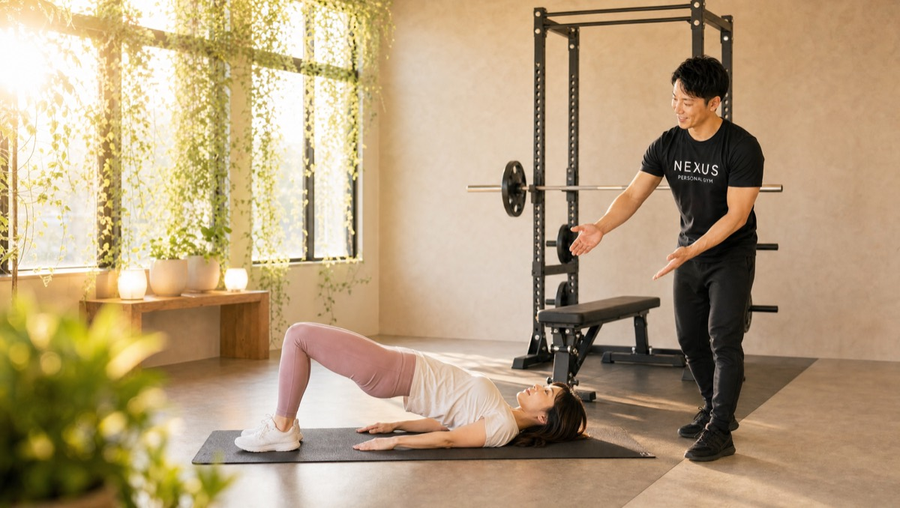
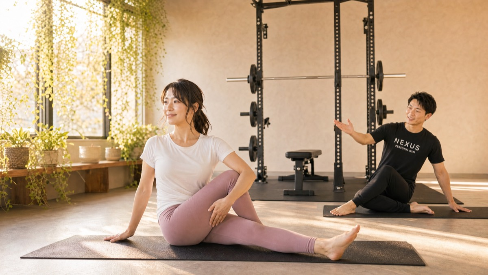

NEXUS Personal Gym ／ 東京都中野区
NEXUSパーソナルジム 中野新橋店｜中野新橋に待望の完全個室ジム

東京メトロ丸ノ内線（分岐線）・中野新橋駅から通える、完全個室の隠れ家パーソナルジムです。これまで中野新橋周辺でパーソナルジムを探すと、新宿や中野まで出る必要がありました。NEXUS中野新橋店は、その生活圏に待望の完全個室ジムとしてオープン。駅の近くで通えるから、仕事帰りや買い物ついでにそのまま立ち寄れます。2026年オープンの新店舗だから、希望の曜日・時間の予約が取りやすく、担当トレーナーとじっくり関係を築けるのも今だけの魅力。無理のないシンプルな設計で、運動が苦手な方でも問題なく始められます。毎日8:00〜23:00・手ぶらOK・LINE予約で、無理なく続けられます。
- 完全個室
- 中野新橋駅から
- 地域初エリア
- 2026年オープン
- 毎日8:00〜23:00
この店舗の特徴
NEXUS中野新橋店は、東京メトロ丸ノ内線（分岐線）・中野新橋駅から通える完全個室パーソナルジム。これまで中野新橋の周辺は、パーソナルジムを探すと新宿や中野といった隣接エリアまで足を延ばす必要がありました。その空白に近いエリアへ、待望の完全個室ジムがオープンしました。いちばんの魅力は「駅の生活圏で完結する通いやすさ」。わざわざ電車を乗り継がなくても、日々の生活動線の中でトレーニングを習慣にできます。さらに、2026年オープンの新店舗ならではの特権として、希望の曜日・時間で予約が取りやすく、担当トレーナーとじっくり関係を築けるのも今だけ。指導は、一人ひとりに合わせた無理のないシンプルな設計で、運動が苦手な方でも「これなら続けられる」と感じられます。ウェア・タオル・ドリンク・プロテインまで無料提供の手ぶら通いOK、予約はLINEでサッと完結します。
シンプルだから、続けられる

「ジムは続かない」——そう感じてきた方こそ、中野新橋店の指導が合うかもしれません。あれもこれもと詰め込むのではなく、一人ひとりに合わせて本当に必要なメニューだけに絞り込む。だからこそ、運動が苦手な方でも「これならできそう」と感じられます。会員からは「一人ひとりに合わせた無理のない設計で、運動が苦手でも問題なく始められた。シンプルで続けやすい内容」という声をいただいています。最初から完璧を目指す必要はありません。まずは無理のない範囲で身体を動かす習慣をつくり、少しずつ負荷を上げていく。シンプルだからこそ迷わず取り組め、続けられる。続けられるからこそ、結果につながります。「今日はこれだけやればいい」と分かっている安心感が、通い続ける力になります。運動経験ゼロからのスタートも大歓迎です。
オープン直後の、今だけの通いやすさ

NEXUS中野新橋店は2026年にオープンしたばかりの新店舗です。実は、オープン直後の今こそ、通い始める絶好のタイミング。人気のパーソナルジムは会員が増えると希望の時間帯が埋まりやすくなりますが、オープン直後の今なら、希望の曜日・時間の予約が取りやすく、自分のライフスタイルに合わせて無理なく通えます。さらに、この時期に入会いただいた方は、担当トレーナーとじっくり関係を築ける「一期生」ならではのメリットも。あなたの身体の変化を、最初から最後まで同じトレーナーが伴走します。新しく清潔な完全個室で、気持ちよくトレーニングをスタートできるのも新店舗ならでは。「いつか始めよう」と思っているなら、予約が取りやすい今こそがそのタイミングです。まずは無料体験で、新しい空間を体感してみてください。
手ぶらで来て、鍛えて、帰るだけ

「ジムに行くには荷物の準備が面倒」——その一手間が、通うハードルになりがちです。中野新橋店なら、ウェア・水・タオル・プロテインまですべて無料でご用意しています。だから、通勤バッグひとつで手ぶらのまま来店し、着替えてトレーニングして帰るだけ。トレーニング後には無料のプロテインで、しっかり栄養補給もできます。中野新橋駅は丸ノ内線分岐線で中野坂上を経由し、新宿方面へのアクセスも良好。新宿でお勤めの方なら、帰宅動線の途中でそのまま立ち寄れます。仕事帰りにスーツや私服のまま来店しても、荷物の心配は一切いりません。毎日8:00〜23:00の営業なので、残業で遅くなった日でも間に合いやすい時間設定。予約・変更はLINEで完結し、6時間前まで無料でキャンセルできます。「準備が面倒だから」を、通わない理由にさせません。
一人では絶対できない追い込み
「一人でジムに通っても、いつも同じところで手を抜いてしまう」——そんな経験はありませんか。中野新橋店では、マンツーマンでトレーナーが横につき、あなたの限界の一歩先まで安全に導きます。会員からは「トレーナーの指導で毎回しっかり追い込める。結果が全然違う。一人ではここまでできない」という声をいただいています。フォームを崩さず、狙った部位に確実に効かせながら、「もう1回」を引き出す。この「もう1回」の積み重ねが、一人では届かなかった結果への近道です。もちろん、無理な追い込みを強いるわけではありません。あなたの体力やその日のコンディションを見極めながら、ちょうどいい負荷で背中を押します。「一人だと甘えてしまう」という方こそ、マンツーマン指導の効果を実感できます。頑張るあなたを、トレーナーが隣で全力でサポートします。
まずは無料体験から

中野新橋店は2026年にオープンしたばかりの新店舗です。「新しい店舗で大丈夫かな」と感じる方もいらっしゃるかもしれませんが、ご安心ください。NEXUSは全国約70店舗を展開する完全個室パーソナルジムで、会員継続率は96%。全トレーナーが3ヶ月の厳しい自社教育プログラムを修了してからデビューする、全店共通の教育体制を敷いています。同じ中野区の系列店では、中野店が★4.9（91件）、沼袋店が★5.0（82件）という評価をいただいています（2026年7月時点）。隣駅の中野富士見町店とあわせて、通いやすい店舗をお選びいただけます。新店だからこそ、一人ひとりに丁寧に向き合う指導を徹底しています。まずは無料体験で、その通いやすさと指導の質を直接お確かめください。
※系列店の評価は2026年7月時点のGoogleマップ口コミによります。
料金プラン
入会金は通常55,000円、無料体験当日入会で15,000円（税込）に割引。全店舗共通の料金です。
アクセス
- 店舗名
- NEXUSパーソナルジム 中野新橋店
- 住所
- 〒164-0013
東京都中野区弥生町2-12-1 商住宅 中野新橋 204号 - 最寄り駅
- 東京メトロ丸ノ内線（分岐線） 中野新橋駅
- 営業時間
- 毎日 8:00〜23:00
- 電話番号
- 050-1790-8499
Googleマップの口コミ
出典：Google マップ
NEXUS中野新橋店は2026年オープンの新店舗。中野新橋の生活圏で完結する通いやすさと、完全個室×手ぶらOKの気軽さで、既に★5.0の評価をいただいています。口コミはまだ2件ですが、同じ中野区の系列店（中野店★4.9・沼袋店★5.0）と同じ教育体制のトレーナーが指導します。
中野新橋で通いやすいジムを探して入会しました。一人では絶対にできない追い込みができて、結果が全然違います。駅から近くて続けやすいのも助かっています。
運動が苦手でしたが、無理のないシンプルな設計で問題なく始められました。店内も清潔で、気持ちよくトレーニングできています。
中野新橋店のよくある質問
Q中野新橋にパーソナルジムはありますか？+
Q中野富士見町店との違いは何ですか？+
Q新宿勤務ですが帰宅途中に通えますか？+
よくある質問（全店共通）
料金・制度などNEXUS全店に共通するご質問です。さらに詳しくは110問のFAQをご覧ください。
Q料金はいくらですか？+
Q手ぶらで通えますか？+
Qキャンセルはいつまでできますか？+
Q食事指導はありますか？+
Qトレーナーはどんな人ですか？+
Q女性会員は多いですか？+
Q体験の流れは？+
NEXUSパーソナルジムの特徴・料金をもっと見る